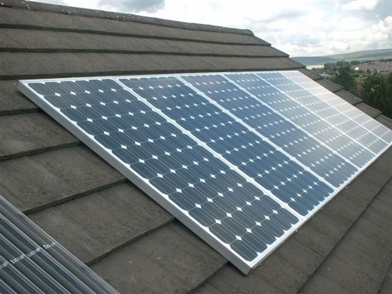

Energia Fotovoltaica
Cos'è?
Il pannello fotovoltaico, chiamato anche modulo fotovoltaico è un
particolare tipo di pannello solare che ha la capacità di generare corrente
elettrica quando
viene esposto alla luce del Sole.Questa è anche la
principale caratteristica che lo differenzia dal pannello solare termico
che serve invece per produrre acqua calda a scopo sanitario ( igiene personale
o lavaggio delle stoviglie ) o per il riscaldamento.

Come è formato il Panello Fotovoltaico?
Il materiale utilizzato è il Silicio, che gode della proprietà di generare una tensione ai suoi capi quando è colpito da radiazione luminosa e conseguentemente di generare corrente elettrica quando la giunzione PN di silicio drogato Pe N è inserita in un circuito chiuso.
Il Silicio è un materiale molto presente sulla terra, ma per godere della proprietà dell’effetto fotovoltaico deve subire un processo di drogaggio (doping) consistente nell’introduzione di droganti, cioè elementi trivalenti quali il boro e l’alluminio o pentavalenti quali il fosforo e l’arsenico.
Panelli Fotovoltaici istallati in Italia
A livello regionale la maggiore potenza installata si trova in Puglia (17,1% del totale), Lombardia (10,3%), Emilia Romagna, Veneto e Piemonte. In termini di numero di impianti la leadership regionale spetta alla Lombardia (14,7%), seguita da Veneto (13,6%) ed Emilia Romagna.
Tipi di Fotovoltaici
Fotovoltaico A Concentrazione
I pannelli fotovoltaici a concentrazione sono innovativi pannelli solari piani che utilizzano concentratori ottici quali, ad es., lenti di Fresnel o riflettori parabolici (tipicamente realizzati in plastica) per concentrare la radiazione solare su una superficie piuttosto piccola, dove viene trasformata in energia elettrica da una cella fotovoltaica multigiunzione

Fotovoltaico a Solyndra
SOLYNDRA è un sistema fotovoltaico completo concepito in modo totalmente nuovo. È stato sviluppato specificamente per tetti piani e tetti a scarsa pendenza e rende possibile l'installazione di impianti fotovoltaici anche su tetti finora ritenuti inadatti o poco caricabili.
Grazie alla sua tecnologia unica a tubi in film sottile il sistema utilizza non solo la luce del sole diretta, ma anche luce diffusa e riflessa.